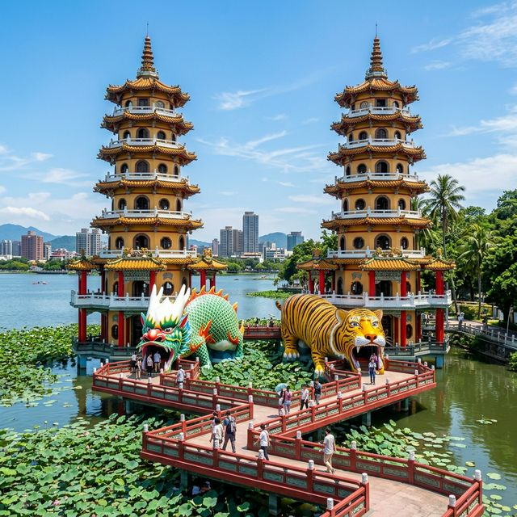
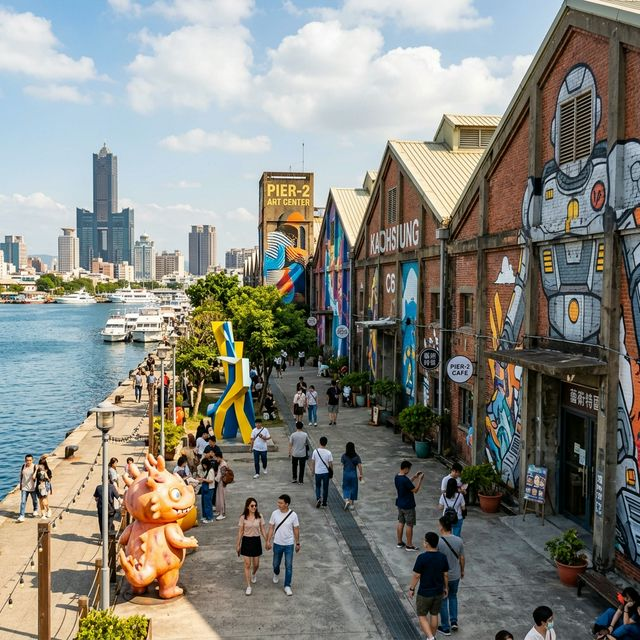
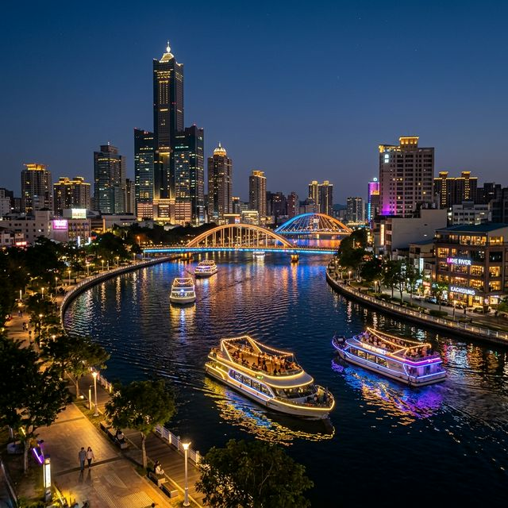

지금이 적기! 대만 가오슝 봄 여행 가이드 — 4월 날씨와 아이허브 유람선 완벽 코스
안녕하세요! 오늘은 대만의 남부 보석, **가오슝(Kaohsiung)** 여행 소식을 들고 왔습니다. 3월 말에서 4월은 가오슝을 방문하기에 가장 좋은 '골든타임'으로 꼽히는데요. 한국의 초여름과 비슷한 쾌적한 날씨 속에서 화려한 야경과 예술의 정취를 만끽할 수 있기 때문입니다. 특히 이번 포스팅에서는 가오슝 여행의 하이라이트인 아이허(사랑의 강) 유람선 이용 팁과 4월 날씨에 맞는 옷차림까지 상세히 정리해 드릴게요.

▲ 가오슝의 랜드마크인 연지담 용호탑. 용의 입으로 들어가 호랑이 입으로 나오면 복이 온다는 설화가 있습니다.
1. 가오슝 4월 날씨와 여행 옷차림
대만의 남쪽 끝에 위치한 가오슝은 타이베이보다 기온이 높고 화창한 날이 많습니다. 4월의 가오슝은 본격적인 우기가 시작되기 전이라 여행하기에 매우 적합합니다. 평균 기온은 **최저 22°C에서 최고 29°C** 정도로, 낮에는 꽤 덥게 느껴질 수 있는 날씨입니다.
💡 4월 가오슝 여행 옷차림 팁
- **낮 시간**: 반팔, 반바지 등 가벼운 여름 옷차림이 기본입니다.
- **실내 및 이동 중**: 지하철(MRT)이나 식당의 냉방이 매우 강하므로 얇은 바람막이나 가디건을 반드시 챙기세요.
- **자외선 차단**: 햇볕이 강하므로 선글라스, 모자, 선크림은 필수입니다.
간혹 갑작스러운 소나기(스콜)가 내릴 수 있으니 휴대용 우산이나 우비를 가방에 상비하는 것이 좋습니다. 또한 습도가 서서히 높아지는 시기이므로 통기성이 좋은 리넨 소재의 옷감을 추천드려요.
2. 2박 3일 추천 여행 코스 (완벽 가이드)
| 일정 |
주요 방문지 |
특징 |
| 1일차 |
가오슝 국제공항 → 숙소 체크인 → 리우허 야시장 |
현지 먹거리 탐방의 시작 |
| 2일차 |
연지담(용호탑) → 보얼예술특구 → 치진 섬 → 아이허 유람선 |
가오슝의 핵심 명소 정복 |
| 3일차 |
항구 도시 전망대 → 다카오 영국 영사관 → 쇼핑 및 귀국 |
아름다운 항구 뷰 점검 |

▲ 창의력이 살아 숨 쉬는 보얼 예술 특구. 폐창고를 개조한 독특한 전시관과 거리 예술이 가득합니다.
🎨 가오슝의 예술적 숨결, 보얼 예술 특구
2일차 오후에는 반드시 **보얼 예술 특구(Pier-2 Art Center)**를 방문해 보세요. 과거 소금과 설탕을 저장하던 항구 창고들이 지금은 세계적인 아티스트들의 캔버스가 되었습니다. 곳곳에 위치한 대형 피규어들과 벽화들은 최고의 포토존이 되어줍니다. 근처에는 대만에서 가장 큰 규모의 잡화점과 서점들도 입점해 있어 기념품 쇼핑을 하기에도 안성맞춤입니다.
3. 아이허(사랑의 강) 유람선: 아경의 정점
가오슝 여행의 백미는 단연 **아이허(Love River) 유람선**입니다. 가오슝 시내를 가로지르는 이 강은 밤이 되면 화려한 조명과 함께 낭만적인 분위기로 변신합니다. 특히 4월의 선선한 밤바람을 맞으며 즐기는 유람선 투어는 잊지 못할 추억을 선사합니다.

▲ 은은한 불빛이 흐르는 아이허의 밤. 유람선에서 바라보는 가오슝의 스카이라인은 정말 환상적입니다.
⛴️ 아이허 유람선 이용 핵심 정보
- 운영 시간: 매일 15:00 ~ 22:00 (약 20분 간격 운항)
- 탑승 장소: 아이허 '국빈 스테이션(Guobin Station)' 매표소
- 이용 요금: 성인 기준 약 250 TWD (현지 사정에 따라 변동 가능)
- 꿀팁: 일몰 직후인 18:30분쯤 탑승하면 붉게 물드는 노을과 화려한 야경을 동시에 감상할 수 있습니다.
유람선을 타며 듣는 현지 가이드의 설명(주로 중국어)을 백퍼센트 이해하지 못하더라도, 강변을 따라 늘어선 루프탑 바와 카페들의 불빛만으로도 충분히 가치가 있습니다. 온라인 플랫폼(클룩, KKday 등)에서 미리 예약하면 현장보다 저렴하게 이용할 수 있으니 참고하세요!
4. 가오슝 여행 시 주의사항 및 팁
가오슝 사람들은 타이베이보다 훨씬 정이 많고 친절한 것으로 유명합니다. 하지만 여행객으로서 몇 가지 수칙은 지키는 것이 좋겠죠?
- **교통카드 활용**: 가오슝 전역에서 '이지카드(EasyCard)'나 '아이패스(iPASS)'를 사용할 수 있습니다. 버스와 MRT 이용 시 할인 혜택이 있으니 공항에서 바로 구입하세요.
- **식수 주의**: 수돗물은 절대 바로 마시지 말고 편의점에서 생수를 구입해 마시세요.
- **야시장 에티켓**: 인기 있는 루이펑 야시장의 경우 월요일과 수요일은 휴무인 경우가 많으므로 방문 전 요일을 꼭 확인해야 합니다.
본 포스팅은 2026년 3월 실시간 여행 정보와 기상 데이터를 바탕으로 작성되었습니다. 봄날의 따스한 기운이 가득한 대만 가오슝에서 사랑하는 사람과 함께 낭만적인 아이허 유람선을 타며 특별한 시간을 보내보시는 건 어떨까요? 안전하고 즐거운 여행 되시길 바랍니다!
© 2026 가오슝 여행 가이드. All rights reserved. 정보 제공의 목적으로 작성되었으며 현지 상황은 사전 예고 없이 변경될 수 있습니다.
#대만여행
#가오슝여행
#가오슝4월날씨
#가오슝자유여행
#아이허유람선
#사랑의강
#보얼예술특구
#용호탑
#대만여행코스
#가오슝2박3일
#치진섬
#해외여행추천
#봄여행지추천
#가오슝야경
#가오슝맛집